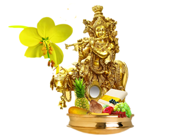

APRIL
2nd April - Ram Navami
Ram Navami is observed as the birth anniversary of Lord Rama. This year Rama Navami festival falls on Thursday, April 2, 2020, four days before the Mahavir Jayanti. It is celebrated on the ninth day of Chaitra month, the first month in the Hindu lunar calendar. It marks the culmination of the spring festival of Vasanta Navratri or Chaitra Navratri which begins on Ugadi. On this day many people conduct homa and conclude the nine days festivities of Chaitra Navratri, due which the festival is known as Ram Navami or Rama Navratri.
6th April - Mahavir Jayanti
Mahavir Jayanti celebrates the birth of Mahavira, a contemporary of the Buddha, and the 24th and last Tirthankara (great sages).
10th April - Good Friday (Easter)
Good Friday is a Christian holiday commemorating the crucifixion of Jesus and his death at Calvary. It is observed during Holy Week as part of the Paschal Triduum on the Friday preceding Easter Sunday, and may coincide with the Jewish observance of Passover. It is also known as Holy Friday, Great Friday, and Black Friday.
13th April - Vaisakhi
Vaisakhi, also known as Baisakhi, is a traditional harvest festival celebrated by Sikhs and Hindus, having been observed in the Punjab region for a long period of time. While celebrations take place predominantly in northern India, the festival is also observed around the world in countries including Canada, Malaysia and the UK.Vaisakhi commemorates the inauguration of the Khalsa in the late 17th century, a term used for Sikhs who have been initiated or baptised.